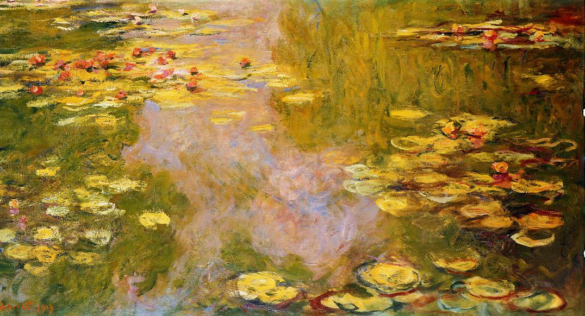
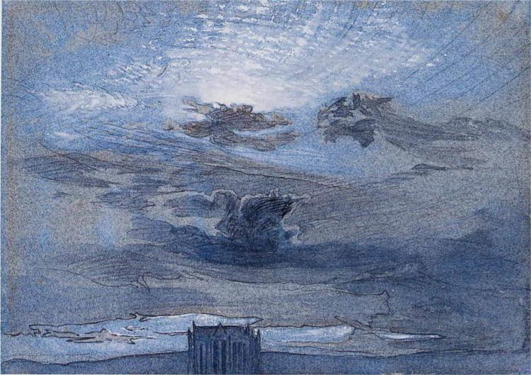
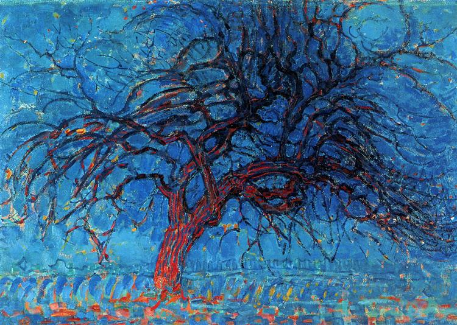
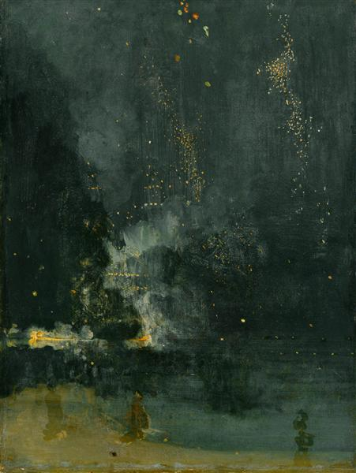
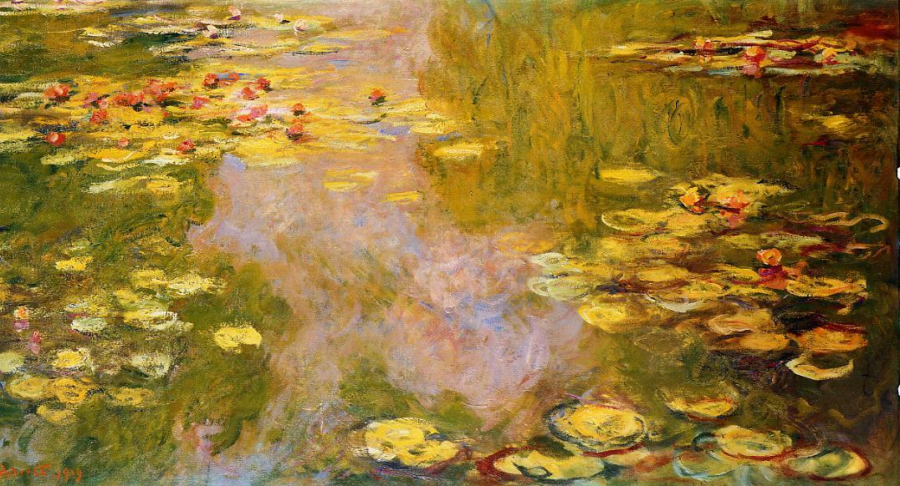
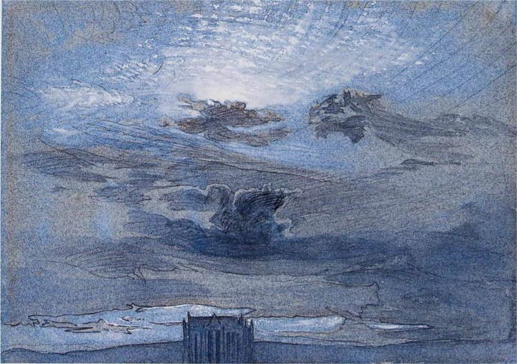
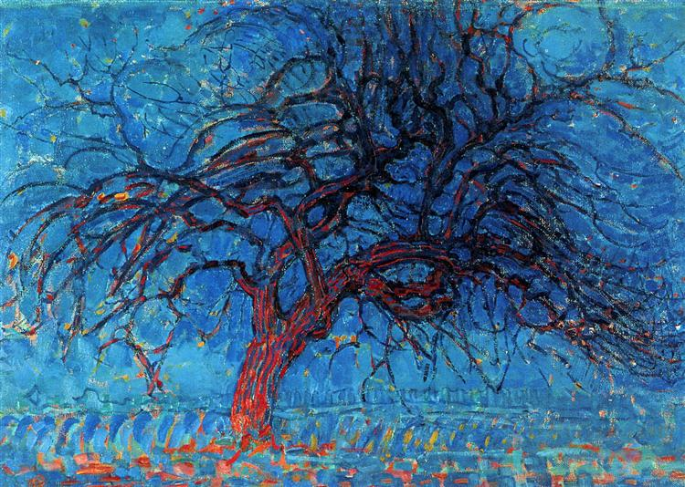
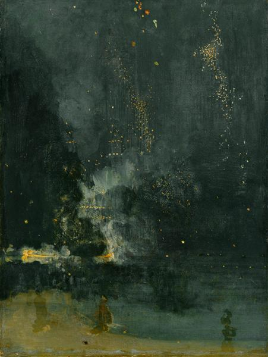

X
X




X
X





Vincent van Gogh (1853-1890) was a Dutch post-impressionist painter known for his vibrant colors and expressive brushwork. Despite personal struggles and mental illness, he created a significant body of work in just a decade. Famous paintings like "The Starry Night" and "Sunflowers" reflect his emotional depth and connection with nature. Van Gogh's tragic life ended in suicide, but his art continues to inspire audiences worldwide.
Claude Monet (1840-1926) was a French painter and a leading figure of the Impressionist movement. Known for his innovative approach to capturing light and atmosphere, his works include series of water lilies, haystacks, and Rouen Cathedral. His paintings broke from traditional styles and influenced the development of modern art. Monet's art continues to be celebrated worldwide.
John Ruskin (1819-1900) was an influential English art critic, social thinker, and philanthropist. He advocated for art that reflected the truth and beauty of nature, and his ideas influenced the Pre-Raphaelite Brotherhood. Ruskin also addressed social issues, criticizing unchecked capitalism and promoting wealth redistribution. He founded the Guild of St. George and contributed to the preservation of historical landmarks. His ideas remain significant in art, society, and the environment.
Piet Mondrian (1872-1944) was a Dutch painter and a pioneer of abstract art. He developed a style characterized by geometric shapes, primary colors, and a focus on simplicity and balance. His works, known as "Neoplasticism," have had a profound influence on modern art and design. Mondrian believed in the power of art to create harmony and sought to apply his principles to various fields, including architecture and design. His innovative approach to abstraction continues to inspire artists and designers today.
James McNeill Whistler (1834-1903) was an American artist known for his contributions to the Aesthetic Movement. He painted "Whistler's Mother" and "Nocturne in Black and Gold." His style emphasized composition, color, and mood. He also worked as an etcher and lithographer. Whistler believed in "art for art's sake" and his work remains influential in the art world.
Kamal-ol-Molk, born in 1848, was a prominent Iranian painter known for his blend of Persian miniature and European academic realism. He studied in Tehran and Paris, creating paintings of historical scenes, landscapes, and portraits. His masterpiece, "The Mirror Hall," is housed in the Golestan Palace Museum. Kamal-ol-Molk established the first modern art academy in Iran and had a significant influence on Persian art. He passed away in 1940, leaving a lasting legacy in Iranian art history.